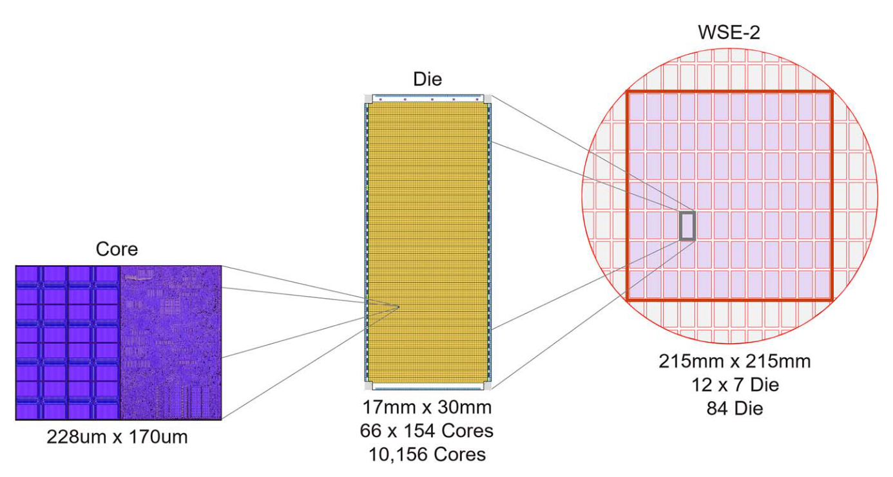
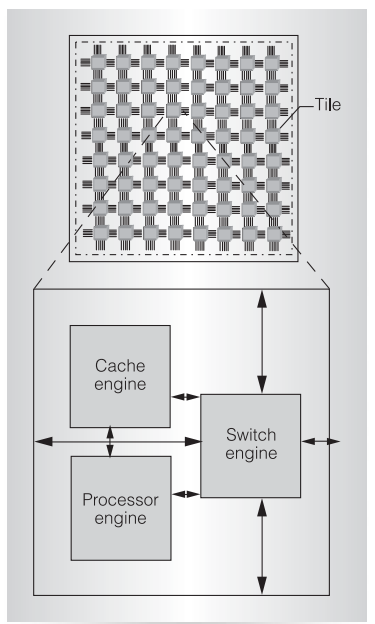
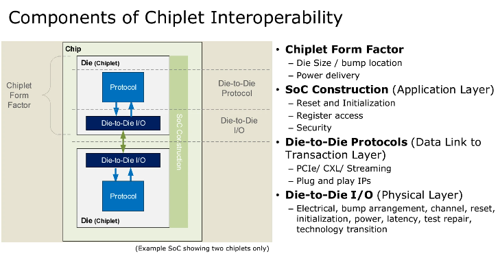
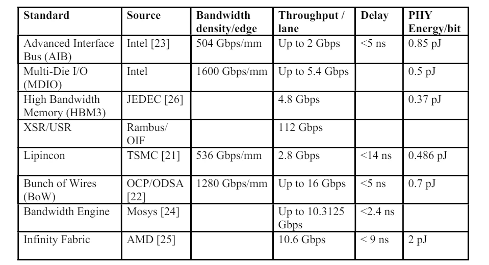
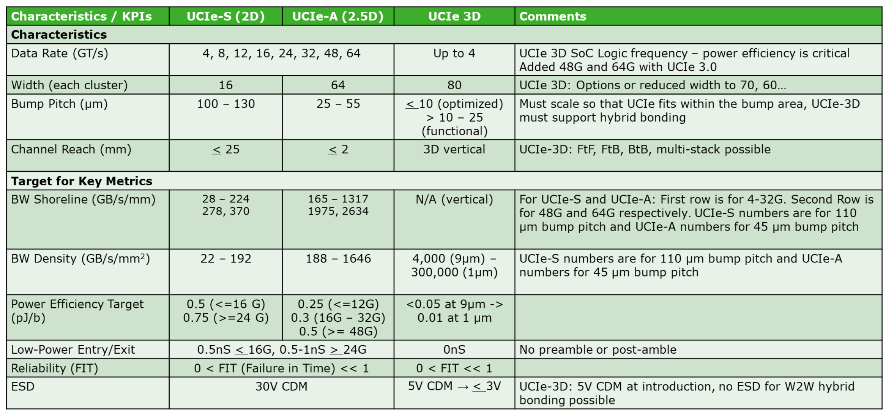

TECHNOLOGY DEEP DIVE
Chiplet Technology and Interconnection
This article provides a concise overview of chiplet technology, with particular emphasis on the interconnect and packaging choices that make chiplet systems practical.
As die sizes grow and monolithic scaling becomes harder to sustain, chiplets offer a more flexible way to build large systems by separating functionality across multiple dies and reconnecting them at package scale.
Definitions
The concept of a "chiplet" is central to modern semiconductor design. Here are a few key definitions:
- Chiplets are independent constituents that form a larger chip built from multiple smaller dies.1
- The core idea is to partition a monolithic System-on-Chip (SoC) into smaller dies, or "chiplets," and then reintegrate them using in-package interconnects, allowing the collective to function as a single, logical SoC.2
- A chiplet is an integrated circuit block designed to work with other chiplets to create a larger, more complex system, often leveraging reusable IP blocks. This approach differs from traditional System-in-Package (SiP) or Multi-Chip Modules (MCM) as it involves new designs rather than combining off-the-shelf chips.3
Chiplet System Overview
By applying chiplet technology, a hardware device (like a CPU, GPU, or switching chip) is structured in multiple layers. We focus on the following levels:
- System: The entire device with complete functionality. This is the highest level of our focus.
- Die: A single piece cut from a wafer, on which an integrated circuit (IC) is fabricated. Dies can be identical repeating functional units or can have different functions, even originating from different manufacturers or process nodes. Multiple dies are combined into a cohesive system using advanced packaging technologies like CoWoS or EMIB in 2D, 2.5D, or 3D arrangements.
- Tile: A repeating functional area of circuitry on a die. For highly parallel tasks (e.g., tensor products, graphics processing, packet switching), a "tiled" design with repeating functional units simplifies design and verification costs. Tiled design is a very common practice today (see Figure 2).


Chiplet System Interconnection
Interconnection within a chiplet system can be divided into two levels:
- Intra-Die: Interconnection between tiles on the same die, implemented during chip fabrication. Modern intra-die interconnects often use Networks-on-Chip (NoCs), which offer a better balance of scalability and performance compared to traditional buses or crossbars.
- Inter-Die: Interconnection between different dies, achieved through advanced packaging. Analogous to NoCs, these can be called Networks-in-Package (NiPs).
Due to significant differences in physical scale and implementation media, the design constraints for these two levels of interconnection are vastly different.
Intra-die Interconnection
Intra-die interconnection is realized through wiring, with design constraints that evolve with manufacturing technology nodes.
- Interconnect Density: The bandwidth per unit width is generally proportional to the operating frequency (f) and wire pitch (P). For example, with TSMC's 7nm process, P=40nm, and assuming a 1GHz operating frequency, the achievable interconnect density is 25 Gbps/μm.6 This is a theoretical maximum, and practical density is lower due to overheads like hardware verification.
- Latency: The latency of an on-chip channel is primarily affected by its length. Long-distance wiring requires repeaters to combat signal attenuation, and each repeater adds to the delay. When a wire exceeds the critical length (determined by the wire type and system tolerance), repeaters become necessary. The cost of a repeater is not much less than a switch, so for very long paths, it is often better to use a switch to connect multiple channel segments.7 This is one reason why NoCs have become the mainstream for on-chip interconnects over crossbars/buses, and why low-radix topologies are preferred.
Inter-die Interconnection
Die-to-Die (D2D) interconnect is a technology for connecting two or more dies within the same package, enabling high-speed data transfer between them. As shown in Figure 3, D2D interface design involves multiple layers.

D2D Protocols
Numerous D2D protocols have been successfully commercialized, broadly categorized into serial and parallel interface protocols.
Serial Protocols
Before the advent of chiplets, serial interconnects were already vital for high-speed communication between systems and chips. Serial interfaces reduce I/O pin count, extend transmission distance, and achieve high data rates. SerDes (Serializer/Deserializer) technology, using differential signaling, ensures robust high-speed data transfer with low power consumption and strong interference resistance.
With the rise of chiplet architectures, the demands on D2D interconnects for bandwidth, latency, and energy efficiency have become more stringent. Consequently, serial interconnect technologies have evolved. For instance, eXtra Short Reach (XSR) and Ultra Short Reach (USR) SerDes technologies have emerged, offering lower power, more compact designs, and flexible protocols, making them particularly suitable for high-speed, short-distance interconnects between chiplets.
Examples of serial interfaces and protocols include LR, MR, VSR, XSR, USR, PCIe, NVLink (NVIDIA), and cache-coherent protocols like CXL, CCIX, TileLink, and OpenCAPI.
Parallel Interconnects
Compared to serial interconnects, parallel technologies, which transmit data over multiple channels simultaneously, can provide higher bandwidth and lower latency. However, they require more I/O resources and more complex routing. As chiplet technology advances, challenges such as increased routing difficulty and cost arise with shrinking chip sizes and increasing packaging density. Parallel interconnects also rely on advanced packaging for efficient signal transmission and thermal management.
Examples of parallel interfaces and protocols include AIB/MDIO (Intel), LIPINCON (TSMC), Infinity Fabric (AMD), OpenHBI (Xilinx), BoW (OCP ODSA), and INNOLINK (Innosilicon).
Figure 4 compares some D2D protocols. Serial interfaces generally have higher latency, while parallel interfaces can achieve lower latency but consume more D2D pins and operate at lower per-pin data rates to maintain signal integrity across parallel lanes.

D2D I/O Implementation
Physically, D2D I/O is typically implemented using advanced packaging technologies. Table 1 and Figure 5 enumerate some of these technologies.
| Manufacturer | Core Packaging Platform/Technology | Key Technology Nodes and Milestones (2026) | Strategic Evolution and Innovation |
|---|---|---|---|
| TSMC | CoWoS series, SoIC, SoW | 5.5x reticle size interposer mass production; CoWoS monthly capacity reaches 130,000 wafers | Transitioning to CoWoS-L to address area limitations, developing System-on-Wafer (SoW) |
| Intel | EMIB, Foveros, Foveros Direct | Advancing chip-on-chip embedding within BEOL; accelerating glass substrate mass production | Eliminating 2.5D interposer dependency, pursuing quasi-monolithic integration density |
| Samsung | I-Cube, H-Cube, X-Cube | Launched bump-less hybrid bonding X-Cube architecture | Leveraging integrated memory and foundry advantages to provide turnkey integration services |

Overall Performance Metrics
The Universal Chiplet Interconnect Express (UCIe) defines a set of industry standards for D2D interconnection. As of 2025, the standard has been updated to version 3.0. It specifies key performance indicators for various packaging types (standard UCIe-S, advanced UCIe-A, and 3D), as shown in Figure 6.

References
- https://en.wikichip.org/wiki/chiplet
- Naffziger, Samuel, et al. "Pioneering chiplet technology and design for the amd epyc™ and ryzen™ processor families: Industrial product." 2021 ACM/IEEE 48th Annual International Symposium on Computer Architecture (ISCA). IEEE, 2021.
- Jan Vardaman, TechSearch International Inc, "Too Many Package Options: What Makes Sense for Your Application?", Hot Chips 2021, Link
- Lie, Sean. "Cerebras architecture deep dive: First look inside the hardware/software co-design for deep learning." IEEE Micro 43.3 (2023): 18-30.
- Wentzlaff, David, et al. "On-chip interconnection architecture of the tile processor." IEEE micro 27.5 (2007): 15-31.
- Wu, Shien-Yang, et al. "A 7nm CMOS platform technology featuring 4 th generation FinFET transistors with a 0.027 um 2 high density 6-T SRAM cell for mobile SoC applications." 2016 IEEE International Electron Devices Meeting (IEDM). IEEE, 2016.
- Dally, William James, and Brian Patrick Towles. Principles and practices of interconnection networks. Elsevier, 2004. Page 62
- Raja Swaminathan, AMD, "Case Study: AMD products built with 3D packaging", Hot Chips 2021.
- UCIe 3.0 Specification: Driving Innovation for Efficient, Scalable, and Reliable Chiplet Integration. Link
Draft written by Xu Wang and Yang Zhang (2024/08)
Polished and formatted by Gemini 2.5 Pro (2026/04)
Last updated at 2026/04